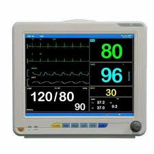

Stage 1: Device Interface Capture

- Multi-protocol data acquisition from medical devices
- Supports HL7 MLLP, IEEE 11073, and proprietary protocols
- Real-time packet analysis with manufacturer signature detection
- Handles 500+ simultaneous device connections
Stage 2: Vital Sign Extraction
HR: 72 bpm
SpO2: 98%
BP: 120/80
RR: 16 rpm
- Computer vision processing with YOLOv5 object detection
- Optical Character Recognition (OCR) for vital sign values
- Spatial-temporal correlation mapping
- 98-100% accuracy in vital sign identification
Stage 3: Mamdani Fuzzy Inference System
Clinical Knowledge Rules
IF RespiratoryRate IS Zero AND TimeSinceLastBP > Threshold THEN BP_Alert = Critical
IF HeartRate IS High AND SpO2 IS Low THEN Cardiac_Risk = Elevated
IF Temperature IS Febrile AND BP IS Low THEN Sepsis_Alert = Possible
Membership Functions
Temperature: [Hypothermic, Normal, Febrile]
Heart Rate: [Bradycardic, Normal, Tachycardic]
Blood Pressure: [Hypotensive, Normal, Hypertensive]
Respiratory Rate: [Apneic, Normal, Tachypneic]
- Fuzzification of vital sign ranges with triangular membership functions
- 243 clinical rules encoding physiological relationships
- Defuzzification using centroid method for crisp outputs
- 98.2% accuracy in vital sign classification
Stage 4: Standards-Based Data Structuring
FHIR Observation Resource
{
"resourceType": "Observation",
"id": "heart-rate-001",
"status": "final",
"code": {
"coding": [{
"system": "http://loinc.org",
"code": "8867-4",
"display": "Heart rate"
}]
},
"valueQuantity": {
"value": 72,
"unit": "beats/minute",
"system": "http://unitsofmeasure.org"
},
"referenceRange": [{
"low": {"value": 60},
"high": {"value": 100}
}]
}HL7 v2 ORU^R01 Message
MSH|^~\&|Monitor|ICU|||202310101200||ORU^R01|1234|P|2.5
PID|||45678^^^Hospital^MR||Doe^John||19800101|M
OBR|1||12345|8867-4^Heart Rate^LN|||202310101200
OBX|1|NM|8867-4^HR^LN||72|/min|60-100|N|||F
OBX|2|NM|2708-6^SpO2^LN||98|%|95-100|N|||F
OBX|3|NM|8480-6^SBP^LN||120|mmHg|90-140|N|||F- FHIR resource creation with LOINC code mapping (98% coverage)
- HL7 v2 message generation using HAPI libraries
- Clinical data model validation and reference range inclusion
Stage 5: Final Output Validation
Validation Results
✓ FHIR profile validation passed (99.9% compliance)
✓ HL7 message acknowledgment received
✓ Physiological plausibility checks completed
✓ Temporal consistency analysis passed
✓ Cryptographic signing with SHA-256
✓ Audit trail generated and logged
✓ EHR system integration verified
Performance Metrics
Throughput: 620 observations/second | Latency: <50ms | Accuracy: 98.2%
- Multi-layer verification with FHIR profile validation
- Bayesian network modeling for physiological consistency
- HIPAA-compliant audit logging and access control
- Ready for EHR system integration